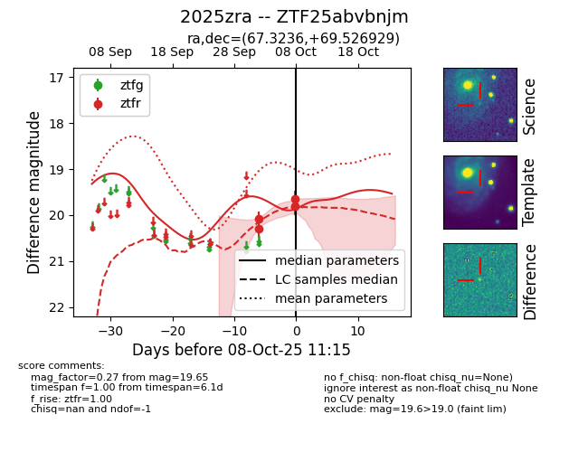
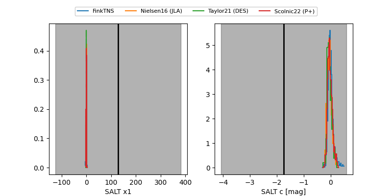

FINK: ZTF25abvbnjm
Lasair: ZTF25abvbnjm
ALeRCE: ZTF25abvbnjm
TNS: 2025zra
YSE: 2025zra
ZTF25abvbnjm (ztf,fink)
2025zra (tns,yse)
equatorial (ra, dec) = (67.3236,+69.52693)
galactic (l, b) = (140.0096,+14.25617)


last ztfr=19.65
4 ztfr detections